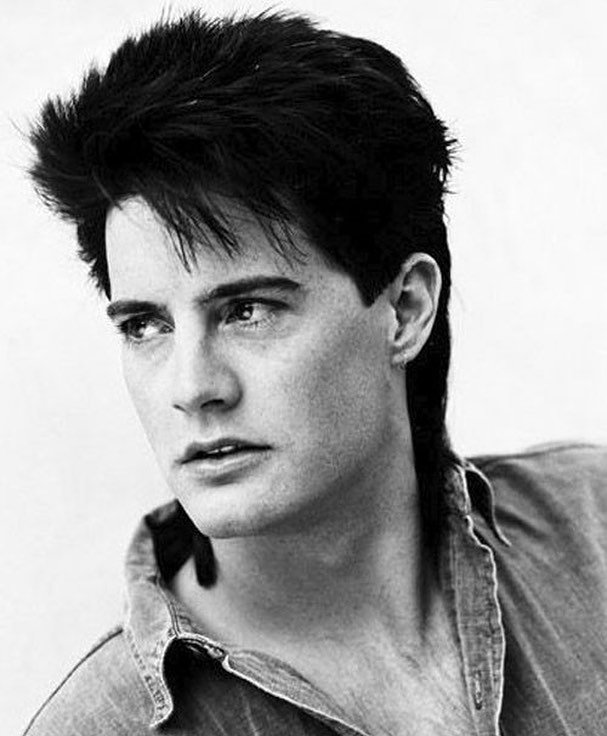
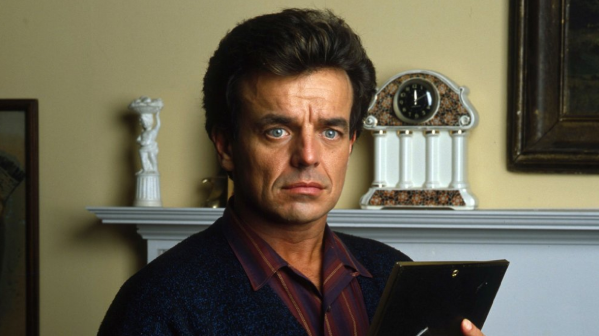

Principales
- Kyle MacLachlan como Dale Cooper

- Sheryl Lee como Laura Palmer

- Michael Ontkean como Sheriff Harry S. Truman
- Ray Wise como Leland Palmer

Secundarios
- Richard Beymer como Benjamin Horne
- Madchen Amick como Shelly Johnson
- Dana Ashbrook como Bobby Briggs
- Peggy Lipton como Norma Jennings
Estos son solo algunos de los talentosos actores que formaron parte del increíble elenco de Twin Peaks.